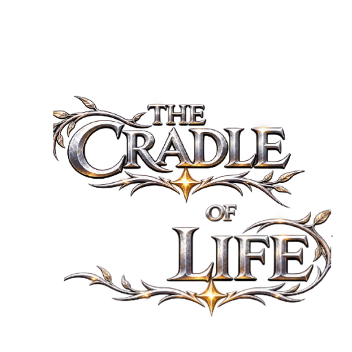
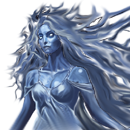
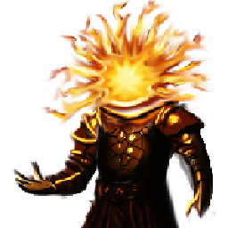
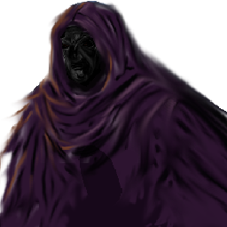
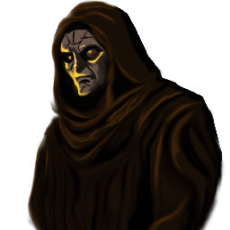
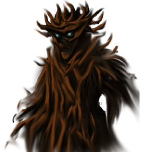
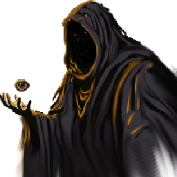

Official press kit
The Cradle of Life
Dark Fantasy Tactical RPG
Caelis is searching for the Needle after a Shimmer takes his wife. Six gods have begun watching what he does.

Press KitOfficial press kit
Dark Fantasy Tactical RPG
Caelis is searching for the Needle after a Shimmer takes his wife. Six gods have begun watching what he does.
Official video
Watch the full trailer here, on YouTube, or download the press-ready 1080p MP4.
Current Steam media
Full-resolution JPG files with individual downloads.
Descriptions for coverage
Use these descriptions as written or shorten them for coverage.
The Cradle of Life is a dark-fantasy tactical RPG about Caelis, a warrior searching for the Needle after a Shimmer takes his wife and whose decisions attract six gods.
The Cradle of Life is a dark-fantasy tactical RPG about Caelis, a warrior searching for the Needle after a Shimmer takes his wife. Combat takes place on a grid where movement and attacks use Action Points. Positioning, height, reach, wounds, Poise, Hunger, and Psych affect each encounter. The opening takes place in Thornvale, where players question people and search for quests and clues. Six gods respond to Caelis's decisions, and each has a different plan for the world. The Steam demo covers the opening section in Thornvale.
Shimmers are appearing without warning. They alter familiar places, and sometimes people or entire villages disappear. After a Shimmer takes his wife, Caelis searches for the Needle, a forgotten relic that may explain what happened. The search begins in Thornvale. Objectives leave the route open. Players progress by questioning people, reading records, and checking roads, homes, caves, ruins, and forests. Combat uses a tactical grid and Action Points. Movement and attacks draw from the same pool. Height, weapon reach, armor, wounds, Poise, fear, and terrain affect each turn. Hunger and Psych continue outside combat, so Caelis's condition when a fight begins matters. Players can customize Caelis's appearance across his world sprite and portrait. Weapon familiarity and Resolve develop through play. Six gods respond to Caelis's decisions, and each one has a different plan for the world. The Steam demo contains the opening section in Thornvale. It introduces the Shimmers and the gods while leaving their larger role unresolved.
Systems in the current demo
The systems below are playable now in the Steam demo.
Movement and attacks use the same Action Point pool. Positioning, height, reach, terrain, wounds, armor, Poise, and fear determine the available choices.
Players find quests and clues by talking to people, reading records, and checking the environment. Objectives leave the route open.
Shimmers alter familiar places, enemies, and terrain. The demo shows their effects and leaves their origin unresolved.
Hunger and Psych continue outside combat. Low values carry into encounters and affect Caelis from the first turn.
Players choose Caelis's appearance, hair, beard, colors, and equipment. His world sprite and portrait reflect the same choices.
The gods respond to Caelis's decisions. Their reactions depend on what he says and does, and each god has a different plan for the world.
All media in one file
Full-resolution screenshots, current web artwork, approved fact-sheet copy, developer information, creator guidelines, and source notes.
Download ZIP · 67 MBA print-quality key-art master is not available yet.
Download Transparent Logo Download Transparent Logo (SVG) Download Key ArtThe world
Shimmers are appearing across the world, and the six gods have begun speaking again after centuries of silence. Each god has a different plan for what comes next and responds differently to Caelis's decisions.
Story information on this page is limited to material from the public demo.






About Garrett
Garrett Mickelsen is the solo developer of The Cradle of Life, an independent tactical RPG made in RPG Maker MZ. He is also an active-duty U.S. Marine officer and military historian. The game began as a personal project built around his interests in history, mythology, and storytelling. Some of its oldest lore came from stories his father told around campfires when he was young.
Most of the work is done in his spare time around military service and family life. The game combines exploration, player choice, character customization, and grid-based combat in a dark fantasy setting of gods and forgotten places.
The Cradle of Life is an independent project and is not affiliated with or endorsed by the U.S. Marine Corps or Department of Defense.
For press and creators
Coverage is welcome. These guidelines apply to the public demo and approved materials supplied through this press kit.
For coverage and interviews
Simple phonetic spellings for major names.
Press / creator contact
For coverage, interview requests, review access, festival inquiries, and asset questions.